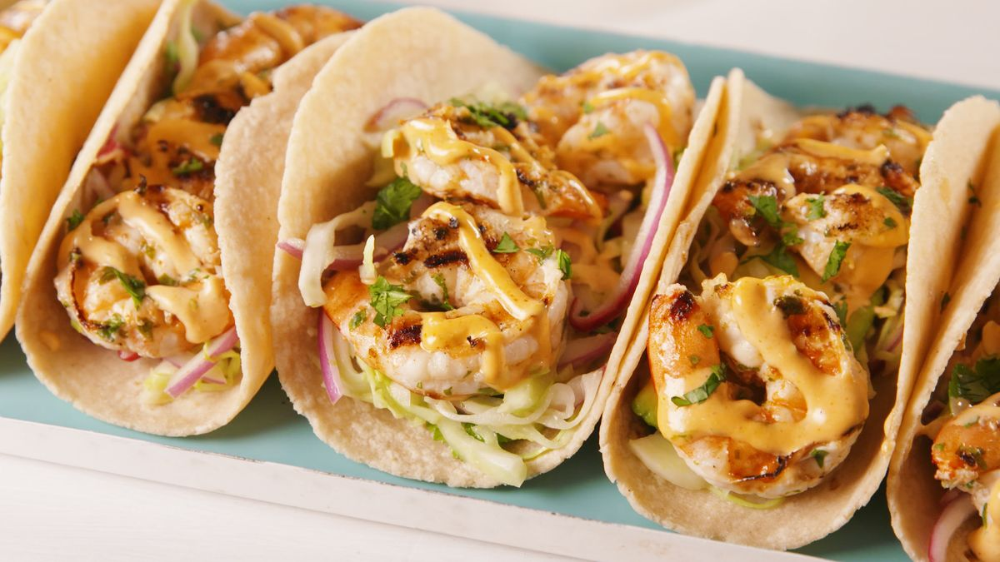

Shrimp Tacos Recipe
Description
The shrimp is sauteed in honey butter, topped with a delicious mango salsa, and wrapped in a tortilla. It tastes worth a million bucks yet is so simple. Everyone will be begging for more.
Ingredients:
- 1 mango - peeled, seeded and diced
- 1 ripe avocado - peeled, pitted, and diced
- 2 tomatoes, diced
- ½ cup chopped fresh cilantro
- ¼ cup chopped red onion
- 3 cloves garlic, minced
- ½ teaspoon salt
- 2 tablespoons lime juice
- ¼ cup honey butter
- 1 pound salad shrimp
- 4 (10 inch) flour tortillas, warmed
Steps:
- Toss the mango, avocado, tomatoes, cilantro, onion, garlic, salt, and lime juice together in a bowl. Cover and refrigerate for 30 minutes.
- Melt the honey butter in a skillet over medium-high heat. Add the shrimp; cook and stir until pink and opaque, 2 to 3 minutes.
- To serve, place a few shrimp onto a warm tortilla, top with mango salsa and fold up. Repeat with remaining ingredients.